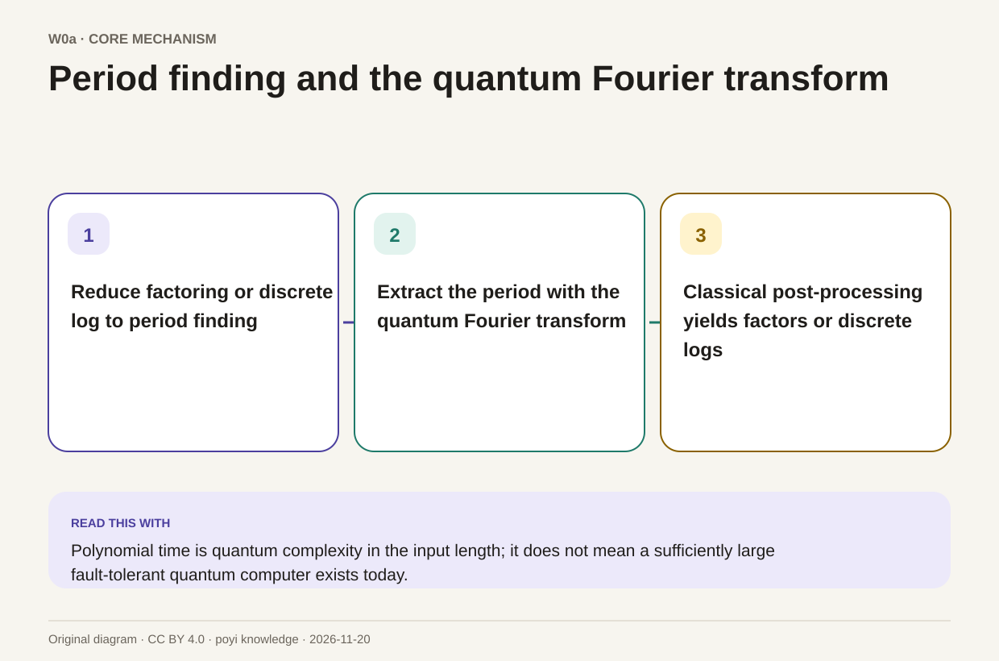

Principles
Theorem: Shor's Algorithm (肖尔算法). Theorem (Shor, 1994): integer factoring and the discrete logarithm problem can both be solved in polynomial time on a quantum computer.
Start with the quantifiers, because that is the skeleton of the theorem:
There exist a quantum algorithm A and a polynomial p such that, for every composite N (n = ⌈log₂N⌉ bits), A runs on a quantum computer capable of arbitrary unitary gates and of coherently executing O(p(n)) steps, and outputs the prime factorization of N in O(p(n)) time using O(p(n)) qubits. The same holds for the discrete logarithm problem in finite fields and in elliptic curve groups. Shor's 1994 result gives O(n³) time and O(n) space; the 1997 journal version spells it out further. Note that the theorem says "polynomial time", not "fast". n³ at n = 2048 is 8.6×10⁹ — unremarkable on its own, but it still has to be multiplied by the cost of error correction (see
broken). The reduction: the whole problem collapses into one subroutine, "find the period". Given a composite N and a random base a, considerf(x) = aˣ mod N. It has a period r (aʳ ≡ 1 mod N). Once you have r: if r is even anda^(r/2) ≠ -1 (mod N), then at least one ofgcd(a^(r/2) - 1, N)andgcd(a^(r/2) + 1, N)is a proper factor of N. So factoring is reduced to quantum period finding.
The quantum part uses two weapons: superposition (one modular exponentiation yields all values of f(x) at once) and the quantum Fourier transform (which makes the period r visible in the amplitudes; a continued-fraction expansion then floats r out). The "semi-classical" version by Pedersen and Shor (1995) replaces the full QFT with phase estimation, dropping the cost from O(n²) gates to O(n) controlled rotations plus O(n log n) single-qubit gates. Zalka (1998) showed the QFT step needs only O(log n) qubits. Discrete logarithms use the same machine: find the order r of a in the group G, then solve a system of linear congruences. One algorithm, two death sentences: RSA and elliptic curves fall together.
In complexity-class terms: factoring and discrete logarithms are in BQP. As a side note, Bernstein and Vazirani showed in 1997 that BQP ⊆ PSPACE, and that P = BQP would imply P = PSPACE — nobody believes the latter. But Shor's theorem does not need that assumption to be devastating: it turns "factoring is hard" from a belief into "factoring is incorrect on a quantum computer".

Why it matters
Because it demolished the foundation under all of public-key cryptography in one stroke, and that foundation carries almost all of the digital trust on earth.
The list is long: RSA encryption, RSA signatures, Diffie–Hellman, ElGamal, DSA, ECDSA, ECDH, SSL/TLS key exchange, PGP, SSH host keys, Bitcoin and Ethereum address signatures, root keys in code-signing certificates, root keys that have sat in HSMs for decades, kernel module signing, firmware update signing. They all share one mathematical assumption — that factoring and discrete logarithms are hard — and that assumption is no longer an assumption, it is a theorem with the wrong sign.
The historical weight of it: in 1994, one paper, about a machine that did not yet exist, threatened every HTTPS connection on the planet, every code signature, every digital coin private key — and at that time the best quantum machine in the world could barely do anything with ten logical bits. Theory ran thirty years ahead of hardware, and it ran a long way.
Three consequences follow directly:
- Post-quantum cryptography happened because of it. NIST called for proposals in 2016 and published FIPS 203 (ML-KEM), FIPS 204 (ML-DSA) and FIPS 205 (SLH-DSA) on 13 August 2024. The entire migration roadmap traces back to that 1994 paper. 2. "Harvest now, decrypt later" became a real threat. Traffic captured today can be stored until the machine arrives. For anything that must stay secret for ten years, the exposure surface moves from "in transit" to "at rest". This is the one threat model that makes "we did not migrate" equivalent to "we already leaked".
- Crypto agility became a hard requirement. If you are paying now for a machine that does not exist, then cryptography has to be replaceable, hybridisable and deployable in stages — hence hybrid KEMs, algorithm identifiers and the whole "crypto agility" practice.
The boundary must be nailed down: Shor does not touch symmetric ciphers, hashes, one-time pads or the Kerckhoffs principle. The quantum threat to cryptography is never uniform — on the public-key side it is a cliff, on the symmetric side it is a step (halved), and that step is Grover's job.
Applications
Nobody runs Shor's algorithm against live systems in production, because no machine can run it. Its real uses are these:
- It is the yardstick for every post-quantum scheme. Every new algorithm has to answer the same question: "how much security do I still have against an adversary with Shor's algorithm?" ML-KEM-768's 192 bits of classical strength and roughly 128 bits of quantum strength — that 128 is anchored by Shor's algorithm. - It is the basis of the migration deadlines. NIST IR 8547 (initial public draft, November 2024) is blunt about it: 112-bit-strength RSA, DH, ECDSA and EdDSA are deprecated after 2030 and disallowed after 2035; NSM-10 sets 2035 as the target year for completing the federal migration. This is not caution, it is the logic of "we cannot afford to be late".
- It is driving an entire industrial response. CISA refreshed its list of product categories that use PQC standards in January 2026, answering Executive Order 14306 of 6 June 2025; NIST published SP 800-227, Recommendations for Key-Encapsulation Mechanisms, in September 2025, and updated its crypto-agility guidance (CSWP 39) in June 2026. "Migration" has stopped being a research topic and become a line item in procurement.
- It is the parent of half the quantum algorithm toolbox. Phase estimation, the QFT, amplitude estimation — the generic tools that quantum algorithms use today all grew out of Shor's algorithm. - It settles what "long-term confidentiality" means. Data that must still be unreadable in ten or twenty years has to be encrypted with a post-quantum scheme today. That is the most direct consequence of harvest-now-decrypt-later.
Limits & attacks
What stands between the theorem and the weapon is physics, not mathematics. The theorem was never refuted — it has been blocked by hardware for thirty years, and it still is.
- "Polynomial time" hides an enormous gap. Circuit-level estimates are the real invoice. Beauregard, Høyer and Mølmer (2011) give 0.3n³ Toffoli gates at depth O(n³). Gidney and Ekerå (2021) give, in the abstract circuit model,
3n + 0.002n·lg nlogical qubits and 0.3n³ Toffoli gates for n-bit RSA, and about 830,000 physical qubits and 30 hours for a 256-bit elliptic curve discrete logarithm. Gidney (2025), using approximate residue arithmetic, concatenated surface codes and magic-state cultivation, pushed RSA-2048 down to under a million noisy physical qubits in under a week — while admitting he sees no way to gain another order of magnitude without changing physical assumptions. The word "polynomial" conceals three orders of magnitude. - Today's machines are several orders of magnitude short. IBM's roadmap: Nighthawk is a 120-qubit square lattice running 5,000–7,500 gates; the first large-scale fault-tolerant machine, Starling, is slated for 2029 with 200 logical qubits and a hundred million gates; Blue Jay comes after 2033 with 2,000 logical qubits and a billion gates. Google's roadmap targets roughly one million physical qubits around 2029 at its sixth milestone. Compare those numbers: Gidney's "a million physical qubits, under a week" for RSA-2048 sits almost exactly on Google's 2029 target, while IBM's 200 logical qubits for 2029 would not even cover a single shot (about 1,600 logical qubits are needed) by that estimate.
- Error correction eats everything. A logical qubit needs a surface-code patch of distance d, costing
2(d+1)²physical qubits each — a factor of hundreds to thousands — and the physical gate error rate has to sit stably below threshold. "A million noisy qubits" sounds modest, but only if they can be corrected and can run for a week. - The theorem has preconditions. The modulus must be a product of two large primes: if the primes are close, small, or of Fermat-like shape, the general number field sieve breaks it in seconds and no quantum machine is needed. Factoring "a hard N" and factoring "an arbitrary N" are different problems, and the theorem is about the former. - What it does not touch, it does not touch at all. Symmetric ciphers, hash functions, one-time pads and quantum key distribution are unaffected by Shor; the halving of 2^n to 2^(n/2) belongs to Grover. And the symmetric half is far cheaper — which is why the priority today is obvious: replace the public-key part first.
- There is a time asymmetry. Forward secrecy (ECDHE) means past session keys are already dead and will never be dug out by a future quantum computer. What stays exposed long-term are long-term signing keys, archived ciphertexts, and data that has to stay secret for thirty years. When to worry depends on how long you need to hide something, not on how strong today's machines are.
- Do not mistake a theorem for a prophecy. The theorem says "if a large enough fault-tolerant quantum computer exists", not "one exists". From 1994 to today, thirty-two years on, cryptographers hold an algorithm already proven to win and not a single machine able to run it. Migration is not happening because the machine arrived; it is happening because we know it will.
![Green “GIVES” column: Polynomial-time quantum algorithms for factoring and discrete log; A structural threat to RSA, DH, and ECC; A direct driver for post-quantum migration. Amber “DOES NOT GIVE” column: No proof that current hardware can run large instances; No equal break for symmetric ciphers; No fault-tolerance or error-correction blueprint. Rose “DO NOT MIX IN” column: Confusing it with Grover’s quadratic speedup; Reading theoretical complexity as an implemented attack; Ignoring qubit and gate overhead.](../../../assets/articles/shor-algorithm-theorem-details/shor-algorithm-theorem-scope.en.svg)
History
- 1994: Shor presents Algorithms for Quantum Computation: Discrete Logarithms and Factoring at FOCS, giving the first polynomial-time algorithms for factoring and discrete logarithms. The phrase "quantum cryptanalysis" comes from this paper's abstract. - 1995: Pedersen and Shor introduce the efficient (semi-classical) quantum Fourier transform, cutting the QFT cost from O(n²) to O(n) gates; Shor publishes the gate-set analysis for universal quantum computation in Physical Review A. - 1997: The journal version, Polynomial-Time Algorithms for Prime Factorization and Discrete Logarithms on a Quantum Computer, appears in SIAM Journal on Computing 26(5):1484-1509, alongside Bernstein and Vazirani's Quantum Complexity Theory. - 2011: Beauregard, Høyer and Mølmer give the circuit-level estimate — 2.8 billion qubits, eight hours to break 2048-bit RSA. That number gets compressed repeatedly over the next fourteen years. - 2016: NIST calls for post-quantum candidates. The "death date" of public-key cryptography enters an official document for the first time. - 2021: Gidney and Ekerå compress the estimate to twenty million noisy qubits and eight hours (Quantum 5, 433). - 13 August 2024: NIST publishes FIPS 203/204/205 and the post-quantum standards take effect. In November 2024: the NIST IR 8547 initial draft sets the migration timeline (deprecate after 2030, disallow after 2035). - 2025: Gidney brings RSA-2048 down to under a million noisy qubits and under a week; IBM and Google both publish fault-tolerance roadmaps targeting 2029; SP 800-227 is released. - To this day: there is still no cryptographically relevant quantum computer. The compute needed to factor a 2048-bit RSA remains science fiction in 2026.
Worked example & verification
Formal model and reproduction steps
[\Pr[\mathrm{Bad}_A(\lambda)]\le \varepsilon(\lambda)]
Shor's Algorithm: the registered public parameters, key material or randomness, and message are mapped through the stated transformation to an output checked against the registered criterion. The worked example is a structural reproduction, not a new test vector; parameter ranges, standard versions and implementation details remain source-bound.
References
- Wikipedia search entry for 肖尔算法. https://zh.wikipedia.org/w/index.php?search=%E8%82%96%E5%B0%94%E7%AE%97%E6%B3%95
- Handbook of Applied Cryptography (Menezes, van Oorschot, Vanstone). https://www.cacr.math.uwaterloo.ca/hac/